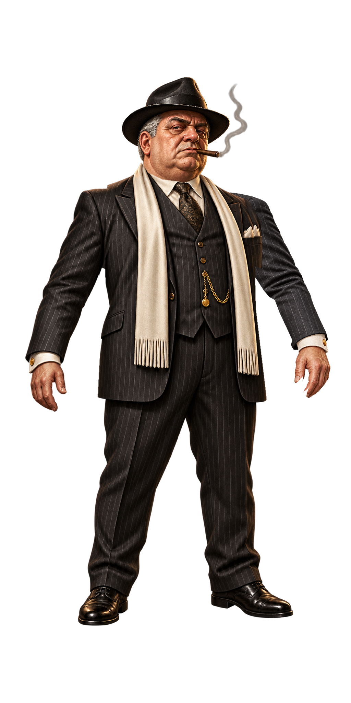
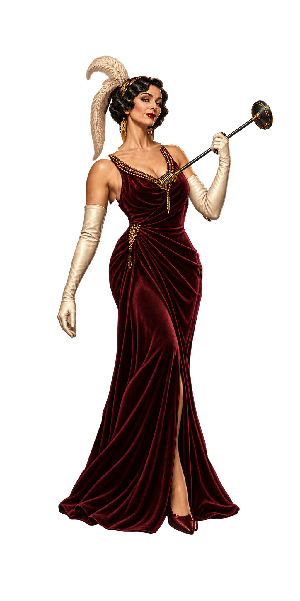
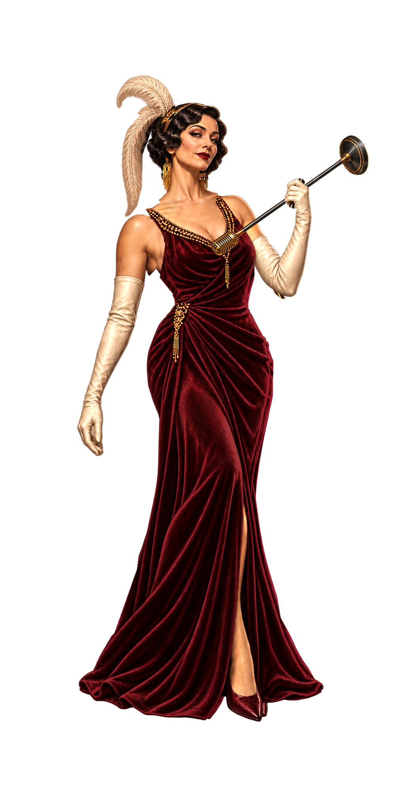
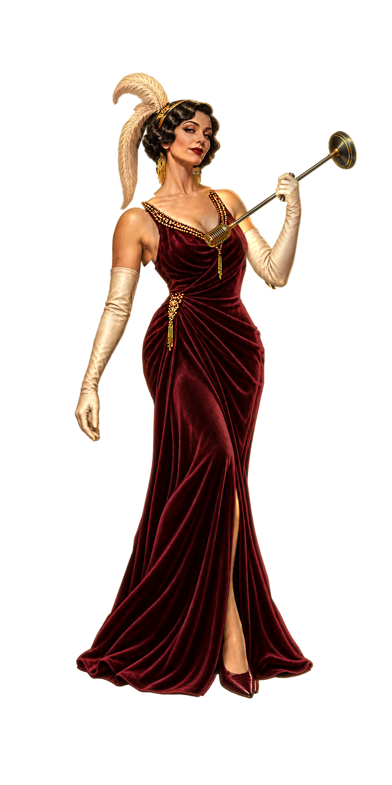

THE DON
MG / 6 層

MG / 6 層

FG / 一般暖光 / 9 層

FG / 加強暖光與酒紅亮面 / 9 層

FG / 金色輪廓光 / 9 層

動畫預覽使用隨包的原創動作表與實際網格，涵蓋待機及三種反應。兩個 FG 打光變化共用相同骨架與透明輪廓。
本頁為美術交件預覽，未替換目前遊戲中的角色。生圖來源：內建 ImageGen；分層配準、畫布對位、PSD 封裝與 alpha 鎖定由製作腳本完成。